SA Display - Mystic¶
Warning
The SA Display plugin is DEPRECATED and no longer supported. Users should avoid using it, since it will be removed from AFSIM in the near future. The ACES Display should be used instead and provides many of the same features plus other capabilities.
The SA Display (Situation Awareness Display) provides the user with a graphical summary of the tactical perceptions for a platform that contains a WSF_SA_PROCESSOR.
Note
For all available data to be shown, a platform with a Situation Awareness Processor is necessary.
Note
The SA Display plugin is a prototype capability and is not complete. As a result of this, it is disabled by default and must be enabled through the Plugin Manager.
To open a display, open the context menu for a platform (right click) in the map display or the platform browser and select ‘SA View’.
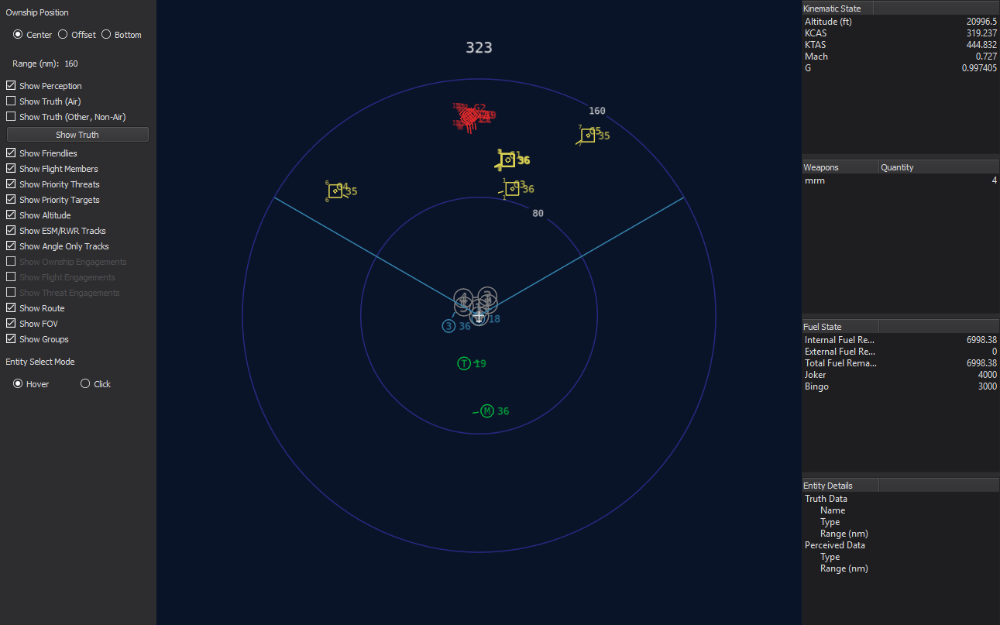Setting a Center Point¶
A center point may be set to allow the user to zoom and get more information about a particular region on the display. This option is available in the context menu (right clicking). Resetting the center point will return the ownship to the center. Below is an example of setting a new center point:
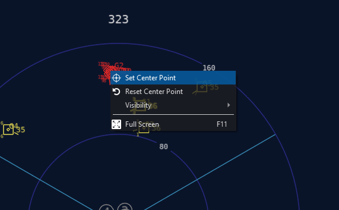A new center has now been set:
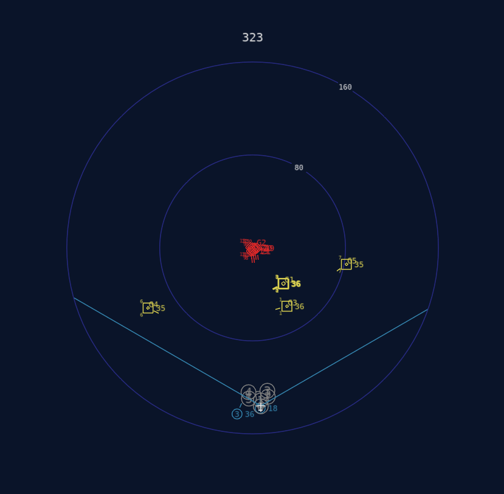Once a new center has been set, the user may scroll to zoom:
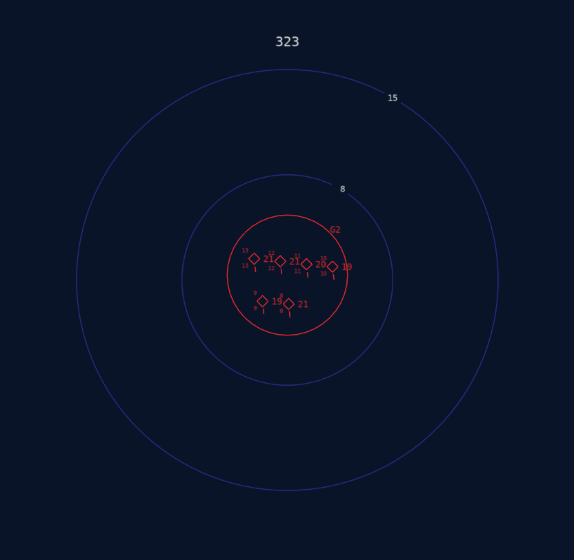Heading¶
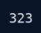The heading of the ownship in degrees is shown at the top of the display.
Symbols Overview¶
The SA Display uses various symbols to indicate particular types of data. These are detailed below.
Perceptions¶
Perceived entities are drawn using their perceived identification. Entities may also include additional information, such as altitude (thousands of feet) to the right of the entity icon, as well as priority threat number (at the upper left of the icon) and priority target number (at the lower left of the icon). Entities are not oriented to heading, but instead, a tick mark is used to show the entity’s heading.
Symbol |
Identification |
Description |
|---|---|---|
Bogie/Unknown |
Yellow square |
|
|
Neutral |
White square |
Bandit/Threat |
Red diamond |
|
Friendly |
Green circle w/ optional id |
|
Flight |
Blue circle w/ flight id |

{kind=link}
{kind=link}
{kind=link}
{kind=link}
{kind=link}
{kind=link}
{kind=link}
As an example, the perception shown below is a bogie traveling at a relative bearing of 0 degrees at an altitude of 21,000 feet. It has been assessed as the highest priority threat and the second highest priority target.

Route¶

The platform route is shown using light gray circles containing the number of each waypoint.
Groups¶
Groups are displayed using circles that are large enough to contain all members of the group. A minimum group radius may be specified in the WSF_SA_PROCESSOR. This is often useful to aid in visualization. Each group contains a unique id, which is displayed to the top-right of the group circle. Groups are drawn in red if all perceptions belonging to it are perceived as bandit/hostile – otherwise, the group will be yellow (bogie/unknown). If a group no longer contains any perceptions, it will coast – this is shown using a faded (ghost) color and the radius of the group circle grows as the uncertainty increases.

Truth¶
Truth data can be shown, which is often useful to compare with perceived data. Truth is drawn in magenta, since no other symbol uses that color – this makes truth icons easy to see. Truth entity icons are aligned with their current heading. A chevron shape is used for air domain icons (both aircraft and weapons) – all other domains use a square shape. This allows easy distinction between aircraft/weapons and other platform types.

Options (Left Side of Display)¶
Ownship Position¶
There are three options that control the offset of the platform and compass within the display. These include Center, Offset, and Bottom. By default, the Center display option is selected. This provides the most complete and unbiased perspective of the environment.
However, to provide increased resolution of the forward region, the Offset and Bottom options may be selected. These trade off space behind the ownship for greater space and detail ahead of the ownship platform.
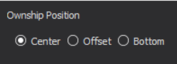Examples are shown below:
Offset |
Bottom |
| 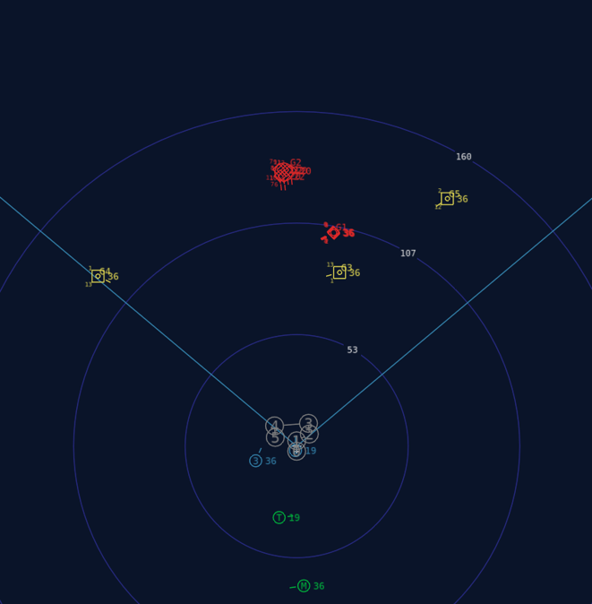 | 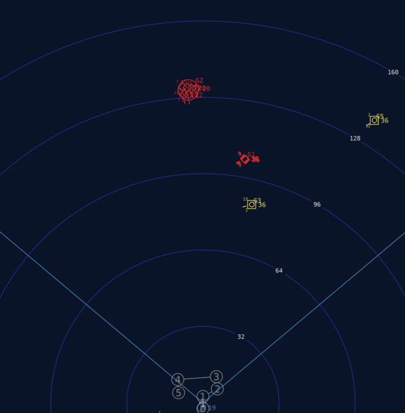 |
Range¶
The range(nm) for the display may be changed by scrolling the mouse wheel up and down. The default range is 160 nm.
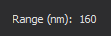Entity Select Mode¶
More information on an entity can be obtained by hovering or clicking on it (depending on the mode selected). This additional information will be shown in the lower right – the entity details region. Hovering/clicking on a perception will show perceived data, and hovering/clicking on a truth entity will show truth data.
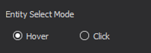Visibility¶
Below is a table showing all visibility check boxes that can be toggled on and off:
Option |
Toggles |
|
|---|---|---|
| 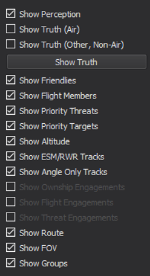 | Show Perception |
Perception entities |
Show Truth (Air) |
Truth entities in the air domain |
|
Show Truth (Other, Non-Air) |
Truth entities in the non-air domain |
|
Show Friendlies |
Friendlies (non-flight) |
|
Show Flight Members |
Flight members |
|
Show Priority Threats |
Priority threat number (Top left of perception entity) |
|
Show Priority Targets |
Priority target number (Bottom left of perception entity) |
|
Show Altitude |
Altitude in thousands of feet (Middle right of perception entity) |
|
Show ESM/RWR Tracks |
ESM/RWR tracks (Large triangle on the inside edge of the compass) |
|
Show Angle Only Tracks |
ESM/RWR tracks (Small triangle on the outside edge of the compass) |
|
Show Ownship Engagements |
This will be implemented in a future release. |
|
Show Flight Engagements |
This will be implemented in a future release. |
|
Show Threat Engagements |
This will be implemented in a future release. |
|
Show Route |
Route/Waypoints |
|
Show FOV |
FOV lines extending from the ownship |
|
Show Groups |
Group perceptions (circles) |
Information (Right Side of Display)¶
There are four subsections of information on the right side of the display that provide information on the ownship platform, as well as perception and/or truth entities. These include the following.
Kinematic State¶
This region shows the ownship kinematic data, including altitude (feet), calibrated airspeed (knots), true airspeed (knots), Mach, and current g-load.
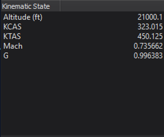Weapons¶
This region provides a summary of the ownship platform’s weapons, including type and quantity.
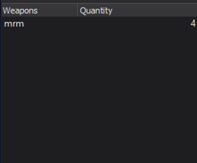Fuel State¶
This region shows the fuel state for the current platform. This includes total, internal, and external fuel remaining, as well as joker and bingo levels.
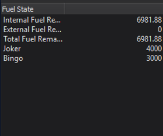Entity Details¶
This region shows either truth or perception data of an entity when the mouse is hovered over its icon.
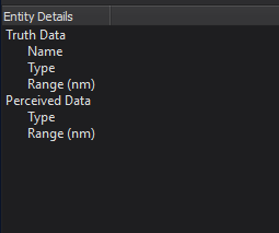